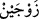

beraberindekilerle birlikte gemiye bin!” emri verildi. Tandırdan su çıkınca hanımı bunu
Nûh’a bildirdi. Bunun üzerine o da gemiye bindi. Bu tandırın Âdem (a.s.)’ın tandırı
olup taştan yapılmış olduğu söylenir. Daha sonra Nûh (a.s.)’a intikal etmiştir. Suya en
uzak şey olduğu halde suyun tandırdan çıkması harikulâde bir olaydır.
Müfessirler tandırın nerede bulunduğu konusunda da ihtilâfa düşmüşlerdir. Bir görüşe
göre tandır Kûfe’de, kilise kapısının hemen bitişiğindeki sağ iç kısma düşen Kûfe
mescidinin bulunduğu yerdeydi. Gemi de burada inşa edilmişti.
el-Kamus’ta şöyle geçer: “el-Ğârûk” Kûfe mescidinin bulunduğu yerin adıdır. Çünkü
Nûh kavminin boğulması burada meydana gelmiştir. Tandır da bu mescidin bulunduğu
yerin bir köşesinde kaynamıştır.
Tandırın Hindistan’da, Şam’da “Aynuverde=Gülpınarı” denilen bir yerde olduğu da
söylenmiştir. Tandır yerin yüzeyi veya yeryüzünün en yüksek yeri olduğu da söylenir.
Hz. Ali’den rivayet edildiğine göre “Tandır kaynayınca” tan ağarınca manâsındadır.
“Nûh’a dedik ki: “(Canlı türlerinin) her birinden” yani yeryüzünde mutlaka
bulunması gereken bütün canlı cinslerinden “birer çift” al!
“
(çift)” kelimesi, biri diğerinden müstağni kalamayan iki şeyden ibârettir.
Bunlardan her birine “zevc (eş)” denir. Mesela: Mestin eşi, ayakkabının eşi denir.
el-İrşâd’da şöyle denilir: “Zevc/eş” kendi cinsinden bir benzeri olan şeydir. Mesela
erkek dişinin eşi olduğu gibi dişi de erkeğin eşidir. Bazen ikisine birden eş dendiği de
olur ve ferd mânâsına gelir. İşte bu ihtimali ortadan kaldırmak için “birer” denmiştir.
“Ve” zulümleri yüzünden boğulacaklarına dâir “aleyhlerinde hüküm verdiklerimiz
dışında” Bunlardan maksad, Nûh (a.s.)’ın oğlu Ken’ân ile annesi Vâile’dir. Çünkü
onlar kâfirdi.
Âyetteki “
(âileni)” ifâdesiyle imân bakımından âilesinden olanlar kastediliyor
olabilir. Zâhir olan da budur. Çünkü “Oğlun senin ehlinden değildir.” ifadesi bunu
göstermektedir. Ancak âile ile akrabalık bağı kastedilmiş olması da mümkündür.
“aileni ve îmân edenleri” yâni âileni ve onlardan olmayan öteki mü’minleri “gemiye
yükle.” Buradaki âile ile kastedilen, Nûh (a.s.)’ın mü’min hanımıdır. Çünkü onun bir
mü’min diğeri kâfir iki hanımı vardı. Kâfir olan Ken‘ân’ın annesi, Ken‘ân’ın oğulları ve
onların hanımlarıdır.
Canlılardan birer çiftin gemiye yüklenmesi, Nûh’un ailesinden ve diğer mü’minlerden
önce zikredilmiştir. Çünkü onlar ancak insanların yardımı ve itelemesiyle gemiye
yüklenir. İnsanlar ise onları yüklendikten sonra gemiye binerler.
Rivâyet edilir ki: Nûh (a.s.): “Ya Rab, her canlıdan birer çifti nasıl yükleyebilirim?”
dedi. Bunun üzerine Allah Teâlâ bütün yırtıcı hayvanlarla kuşları Nûh (a.s.)’ın yanında
topladı. Artık Nûh (a.s.) her cins hayvan için ellerini birbirine vuruyor, erkek sağ eline,
dişi sol eline geliyordu. O da onları gemiye bindiriyordu.
Hasan Basrî der ki: Gemiye sadece doğuran ve yumurtlayan hayvanlar yüklenmiştir.
Sinek, böcek ve haşerat gibi topraktan meydana gelip üreyenler gemiye yüklenmemiştir.